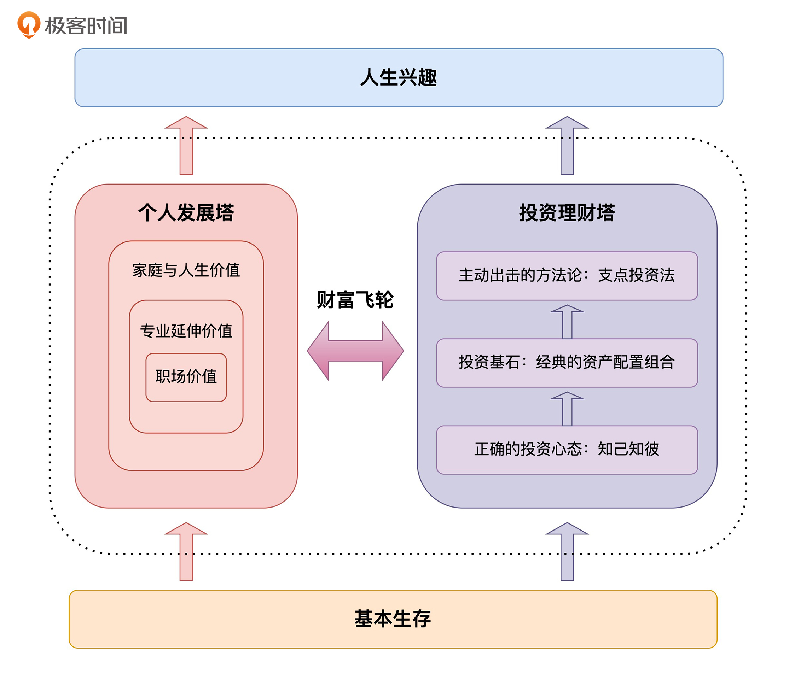

- 00 开篇词 为什么说程序员最适合学财富管理？.md.html
- 01 财富框架：建立属于你自己的财富双塔.md.html
- 02 个人发展：你自己的发展才是最大的财富源泉.md.html
- 03 理财金字塔：如何建立稳固的投资理财结构？.md.html
- 04 实战知识：有哪些收益稳健的经典资产配置组合？.md.html
- 05 支点投资法：主动投资是讲逻辑的！.md.html
- 06 不当韭菜：在财富管理的过程中摆正心态，知己知彼.md.html
- 07 职业方向：如何选择一个有前景的职业方向？.md.html
- 08 职业规划：大公司VS小公司，怎样选择更有前途？.md.html
- 09 期权股权：如何正确处理公司的期权、股权？.md.html
- 10 跳槽涨薪：如何规划一条合理的职业道路？.md.html
- 11 财富拓展：35岁失业？程序员如何拓宽财富渠道？.md.html
- 12 房产投资：如何做出理性的买房决策？.md.html
- 13 实战知识：让我们编程计算下怎么还房贷最合适.md.html
- 14 基金投资：如何让专业人士帮你赚钱？.md.html
- 15 实战知识：如何选出一只优质的基金？.md.html
- 16 股票投资：最适合散户的股票投资方法是什么？.md.html
- 17 投资闭环：如何成为越来越专业的投资者？.md.html
- 18 技术优势：程序员如何用技术超越其他投资者？.md.html
- 19 量化投资：典型的量化投资系统都包含哪些模块？.md.html
- 20 价值投资：永远不过时的中长期投资策略.md.html
- 21 趋势跟踪：怎样跟着趋势一起赚钱？.md.html
- 22 轮动策略：如何踩准市场变换的节奏？.md.html
- 23 对冲思想：这个世界上有稳赚不赔的生意吗？.md.html
- 24 多因子模型：整合不同策略，形成合力的顶层框架.md.html
- 25 机器学习：我们能用机器学习来建立投资模型吗？.md.html
- 26 量化实战：从0到1搭建起一套简单的量化投资系统（上）.md.html
- 27 量化实战：从0到1搭建起一套简单的量化投资系统（下）.md.html
- 番外一 王喆对话李腾：程序员对基金经理的灵魂十问（上）.md.html
- 番外三 有哪些能够持续学习的参考资料和相关网站？.md.html
- 番外二 王喆对话李腾：程序员对基金经理的灵魂十问（下）.md.html
- 番外四 知识总结：这门课的全部思维导图.md.html
- 答疑课堂（一） 财富框架篇、个人发展篇思考题集锦.md.html
- 答疑课堂（二） 投资实战篇、投资进阶篇思考题集锦.md.html
- 结束语 知行合一：财富管理是一生的事情.md.html
- 捐赠
06 不当韭菜：在财富管理的过程中摆正心态，知己知彼
你好，我是王喆。
今天这一讲是这门课第一个模块，财富框架篇的收尾。在接下来的三个模块里，我会基于已经搭好的框架，给你讲解具体的财富管理方法。在这之前，我们还剩一个重要的总体性问题没解决，那就是投资心态。
我在01讲里就强调过，自信和淡定的投资心态，往往是投资过程中最重要的。那我们应该怎么摆正心态呢？我觉得完全可以用一个词来概括，那就是“知己知彼”，也就是对自己、投资标的和交易对手都有清晰的认知，只有这样才能避免成为被收割的“韭菜”。
这一讲，我们就来纠正一下普通投资者的常见投资误区，讲一讲如何在财富管理中认清自己，认清对手，并从自身优势出发赢得胜利。
永远要记住，你只是一个普通人
我在开篇词中就提到过，这门课的目的是让你“做一个更好的、普通的自己”。事实上，投资者被割韭菜，往往不是因为“技不如人”，而在于无法接受自己只是一个普通人。
巴菲特的老师格雷厄姆，曾不只一次地向普通投资者们推荐购买“指数基金”，建议他们不要做各种“花式”的主动投资。这是因为，绝大多数的普通投资者都不具备高超的投资技巧和过人的天赋，被动地配置指数基金，往往就是保持财富与市场一同增值的最好办法。如果你过分自信地主动瞎操作，反而很可能被别有用心的人割韭菜。
所以，我们绝大多数人在投资前，都应该对自己说三句话：
- 这辈子我不可能只靠投资就实现财富自由；
- 我不可能是那个万中无一的幸运儿，刚开始投资就能稳定盈利；
- 如果我在投资的时候随意操作，不讲投资逻辑，就算一时靠运气挣到了钱，也早晚会被亏光。
只要你清楚了这三点，我相信就算你什么都不做，只靠着合理的资产配置被动投资，就能超过市场上50%的投资者。
你也许对我的这种说法心怀疑虑，那就给你举个例子：2020年，中国的A股全市场指数上涨了23.7%，但中国股民的盈利比例有多少呢？51.9%。也就是说，将近一半的股民居然在大盘上涨了23.7%的情况下亏钱了。这不就是说明，即使你什么也不做，也能战胜全国50%的股民吗？进一步说，如果你能够遵循“永久组合”等被动的资产配置方案，战胜80%的股民也不是什么难事。
如果你不满足于此，准备尝试主动投资来赚取更多收益，那“知己知彼”这一点对你来说就更为重要了。而要做到“知己”，就要跳出那些常见的投资误区，想清楚自己作为一名普通投资者的优势，摆正心态。你可能想问，具体有哪些常见误区呢？我们又该如何发挥自己的优势？别急，下面我就给你详细讲一讲。
普通投资者的常见误区
误区一：加入多个炒股群，盲从“炒股专家”或电视炒股节目的意见
很多个人投资者喜欢听同事、专家的意见，加入很多炒股群、理财群，期望获取一些独家的信息和技巧。我们且不论这些意见到底有没有用，先从上一讲介绍的“支点投资法”出发，分析一下“听专家意见投资”的弊端。
在你跟随某位专家投资的时候，其实是默认这个专家的意见就是你的“投资支点”。也许这位专家的意见是对的，但是支点投资法要求你不断验证这个投资支点还存不存在，你不清楚专家作出这个决策时的内在逻辑，又如何去作出验证呢？
而且，在支点投资法中，退出的条件是支点的崩塌。思考一下，你是听专家意见买入的，那么这位专家能够如此认真负责，专门通知你要退出了吗？
退一步说，我们就假设这位专家确实很厉害，你买入和卖出都是跟他操作的，这就意味着你投资的唯一支点就是这位专家的意见。他管得了你一次投资，他能管你一辈子吗？他能时时刻刻地、毫无保留地把他所有的投资决策都分享给你吗？这显然是不现实的。
其实管理自己的个人财富，就像锻炼身体、抚养子女、学习知识一样，是人一生中最重要的体验之一，只可能通过你自己的思考和经验的积累来完成。任何依赖他人的想法，都是幼稚和不可持续的。对于专家的意见，我们应该持一种“拿来主义”的态度，重要的是吸收消化，转化成你自己做决策的能力。只有这样，你才能成为独立成熟的个人投资者。
误区二：盲目自大，频繁短期操作
在投资的初期，大部分人都有盲目自大的心态，我也不例外。2009年我刚炒股的时候，运气比较好，赚了一些钱，我就认为自己非常厉害，天赋异禀，不再是一个普普通通的人了。在这种心态下，我开始进行频繁的短期操作，不操作就觉得手痒痒，感觉不这样就体现不出我的聪明才智。结果呢，我的收益率从最初的10%迅速下降，然后由正转负，最低时亏损到30%。这一失败经历还让我阶段性地放弃了股票投资。
那怎么看待“频繁短期操作“这种做法呢？不谈过多操作带来的交易佣金上升问题，我们就来分析下，我们频繁短期操作时，面对的对手是谁。
一般来说，市场上做中高频交易并且能够盈利的人，几乎都是专业投资者：有依托强大投研团队的基金经理；有每天至少花4小时交易、5小时复盘的私募交易员；还有全体成员都是名校毕业，国内外投资经验都异常丰富的量化投资团队。而我们作为一个普通投资者，把自己放在他们的对立面，真的有胜算吗？
那专业投资者是怎么看待频繁短期操作的呢？我们的课程顾问李腾老师做过十几年的基金经理，他总结了两种可以靠频繁短线操作盈利的方式：一是通过高频交易模型，利用大数据、强大的算力、低延迟的交易系统以及交易所的返点实现；二是只交易自己特别熟悉的几只股票，并且有大量交易经验和超出常人的投资天赋。
我听完李腾说的这两种情况之后，很有自知之明地放弃了高频短期操作，因为我的时间、精力和拥有的资源都满足不了上面提到的两种情况。
有一句话说得好：“不要拿自己的业余爱好挑战别人的专业。”更何况在投资领域，这里的“别人”往往就是这个世界上最聪明的一群人。要记住，我们仅仅是普通投资者，不要主动把自己扮成韭菜，送到别人的“镰刀”下。
误区三：谨小慎微，只敢把钱放银行存定期
和过度自信、频繁操作的投资者相比，有的同学会陷入另一个极端：曾经因为炒股或者投P2P亏过钱，就“一朝被蛇咬，十年怕井绳”，什么投资都不敢做了。
其实，这样的行为同样是韭菜行为，只不过收割你的不是那些专业投资者，而是通货膨胀，是上涨的房价，是你错过的一个又一个投资机会。
一个人的财富永远都是相对的，别人的财富都按照7%的速度增长，而你的财富放在银行，按照3%的速度增长，这本身就是一种财富的缩水。举个例子：十年前，用100万能在北京海淀区买一套一居室，这十年中你把100万放在银行，现在成了140万，却只能在海淀区买一个厕所了。
我们建立财富双塔结构，是希望让你的财富飞轮越转越快，不是让你的财富越来越缩水的。把你的钱置换成优质的财富资源，再通过科学的方法进行主动配置，才能够实现财富的保值和增值。
以上就是个人投资者的三个常见误区。如果你当下还在被这三个误区困扰，那么非常不幸，你很有可能是金融市场中的一棵“韭菜”。
这时你可能会问：难道我作为一个普通投资者，就什么优势也没有，只能接受自己当韭菜的命运吗？当然不是。这种悲观的心态说明你还是没有正确认识自己。要记住，即使和专业的投资者相比，我们也有无法超越的优势。只要能认清自己的优势，并且充分发挥它们，你同样能在投资这场持久战中赢得胜利。
和专业投资者相比，普通投资者的优势在哪？
优势一：长钱优势
个人投资者最大的优势就是长钱优势。这里的“长钱”，指的是可以长期不被挪动，只用于投资的资金。
机构投资者使用的资金都是代理人的，而代理人在遇到较大的回撤时，对机构投资者的信任就会崩塌，产生大量的赎回行为。
李腾经常和我说，表面上看机构投资者的优势非常突出，其实他们也有很多的无奈。尽管机构投资者有来自顶级名校的团队成员，有丰富的投资经验，有体量大的资金，有取之不尽的投研资源，但是他们最大的无奈就是他们的钱不是长钱。一方面，什么时候卖出更多是由他们的客户决定的；另一方面，机构投资者还背负着巨大的短期业绩压力。所以，一些收益最丰厚的长期投资机会，机构投资者就只能忍痛舍弃。
相比而言，普通投资者的资金是自己的，如何投资全凭自己控制，是真正的长钱。理解了这一点，你就会意识到：在长期投资这条赛道上，机构投资者是有先天缺陷的。这就是普通投资者在长期投资这条赛道上“克敌制胜”的客观基础。
利用长钱优势，你可以在底部逐步买入一个被低估的投资标的，并耐心地长期持有。而世界上一流的投资机会，往往都需要长期的持有，只有具备真知灼见的个人投资者才有可能好好把握它。这是专业的机构投资者无法比拟的优势。
优势二：专业信息优势
对个人投资者而言，除了长期投资的机会，还有一些特殊赛道的机会，如果把握住了，是真有可能改变你的人生的。这种机遇只会出现在你最熟悉的，有认知优势的细分领域。这种对某个细分领域的认知优势，我称之为个人投资者的“专业信息优势”。
专业信息优势主要来自于我们长期从事的行业。因为是业内人士，所以有着领先于市场的认知，即使遇到自己解答不了的问题，也有可利用的资源去进一步求证。最关键的是，我们对自己所在的行业的判断更有信心，这样才能在长期投资中坚守信念。
举一个最简单的例子：一位在特斯拉或者蔚来汽车上班的程序员，对于新能源汽车领域的认识，一定远远高于其他投资者，甚至高于专业的投资机构。这时，利用自己的专业知识，在法律允许的范围内，去投资领域内的关联公司股票，就是一种利用专业信息优势进行投资的理性行为。
关于利用专业信息优势进行投资的具体实例，我们会在后续的课程中深入讨论。在这里你只需要明白一点：弄清楚你对哪些领域的专业认知超过他人，然后利用这个信息优势投资。在你的专业赛道上获得成功的概率要远远高于其他的投资赛道。
优势三：程序员优势
最后一个优势，它完全属于我们程序员群体，我把它叫做“程序员优势”。毫不夸张地说，程序员是当今世界不断进步的推动者。借助于先进的工具和硬件设备，不断累积的商业大数据以及先进的算法模型，程序员们极大地改变了很多传统行业的运转效率。每一个传统行业被互联网赋能之后，都会发生翻天覆地的变化。
而投资，就是一项高度依赖信息的活动，需要持续地搜集和分析信息，不同的投资机构之间，PK的就是信息搜集和分析的能力，而这两方面的能力都可以被先进的工具极大地赋能。熟悉这些先进工具的程序员们，必定拥有着领先于时代的优势。
在这里，作为一名程序员的你可能会有疑问：专业投资机构那么有钱，聘用一些优秀的程序员去提高它们团体数据分析、算法开发的能力不就行了，我们个人程序员还会有什么优势呢？
其实不用这么悲观。大型投资机构的高管，他们一般是传统投资出身，并不熟悉现在互联网最先进的工具，以及很多最新的机器学习的知识。而一个人对于自己不熟悉的领域，有着本能的不信任，这样的不信任甚至是刻在公司基因中的。所以我可以自信地说，当时代发生变革的时候，推动社会进步的力量更可能来自于初创企业，甚至是程序员个人。
清楚了这一点，我们就应该知道：如果能够在投资过程中，发挥我们程序员的工具优势、模型优势，来构建一些量化的交易算法或者系统，是完全有可能在投资的过程中胜出的。
在个人发展的过程中同样要摆正心态
上面我讲的三个误区和三大优势，全都是从投资理财的角度讲的。那么对财富双塔框架熟悉的同学一定会问了：个人发展的过程中，还需不需要考虑个人的优势劣势，做到知己知彼呢？答案当然是肯定的，在个人发展的过程中同样要摆正心态，避免被割韭菜。
这里的“割韭菜”是更加广义的，它指的是一切收割我们财富的行为。我在 02 讲给你搭建“个人发展”塔的时候曾经讲过，个人发展过程中的财富包括了你的专业技术能力、技术人脉、职场级别等等。如果有一家公司，它只会让你在工作中进行单调重复的劳动，而不会帮你提升技术，也不会让你在工作中结识更多技术超过你，综合素质优于你的同事，那么毫无疑问，你被公司“割韭菜”了。你不会从这家公司获得任何财富，拿到的仅仅是用你的重复劳动置换来的工资。
有的同学可能会说：我现在学会在公司“摸鱼”了，人生也基本“躺平”了。公司哪割得了我的韭菜？明明就是我在割公司韭菜啊！
对此我想说的是，这样的同学很“聪明”，但却不够智慧。因为这样短期“割韭菜”的行为，是以损伤你的长期财富积累为代价的。我觉得对大部分普通人来说，提升自己的个人财富才是人生最可靠的保险。长期的“摸鱼”行为带来的一定是个人发展的停滞不前，如果公司健康发展也就罢了，一旦出现问题需要裁员，个人发展长期停滞的你根本不具备足够的职场财富，也就会被人才市场无情地抛弃。
所以，互相促进、互相成就才是公司和员工的健康关系。公司财富和个人职场财富也一定是同步提升的。这一点也不用我多说了，硅谷公司以及国内互联网公司的无数成功故事已经作了有力的证明。
那么到底如何去管理自己的职场财富，如何选对公司，选对方向，让个人价值快速提升呢？这里先卖个关子，我会在下一个模块“个人发展篇”和你好好谈这个问题。
小结
到这里，今天这一讲就接近尾声了。你可以把它看作在学习具体的财富管理之前，正确认识自己，摆正心态的一个机会。这一讲的内容很多，但可以简单总结成一个出发点、三个误区、三个优势，以及一条补充观点。希望你再看一遍，加深印象。
- 一个出发点：任何投资理财的行动，都要以“你只是一个普通人”为出发点。
- 三个误区：在投资理财过程中，听信所谓投资专家的意见；期望通过频繁的短期操作来赚取更多的收益；因为惧怕投资亏损，只敢把钱放到银行。
- 三个优势：长钱优势、专业信息优势、程序员优势。
- 一条补充观点：程序员在个人发展的过程中同样要摆正心态。
到这里，我们就结束了“财富框架篇”的学习。我要再次强调，这一模块的内容非常重要。因为如果框架立不住，细节再丰满也仅仅是“不打地基就盖高楼”，盖得越高越危险。在这一讲的最后，我结合了这一模块的重点内容，再次丰富了我们的财富双塔结构，希望能够帮你一眼掌握整个模块的精华。

接下来，我们将进入“个人发展篇”的学习。我会在这一模块中，跟你聊一聊程序员的职场规划、offer选择、跳槽、主业副业等跟个人发展紧密相关的话题。期待与你在财富管理之路上继续同行。
思考题
这一讲我们提到了三个投资误区。你曾经走过类似的弯路吗？在投资理财的过程中，你还遇到过哪些坑，陷入过哪些误区？
希望你能跟我一样，把自己的经历分享给大家，让我们一起总结经验，少走弯路，共同进步。
© 2019 - 2023 Liangliang Lee. Powered by gin and hexo-theme-book.